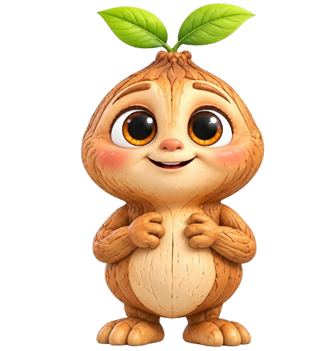
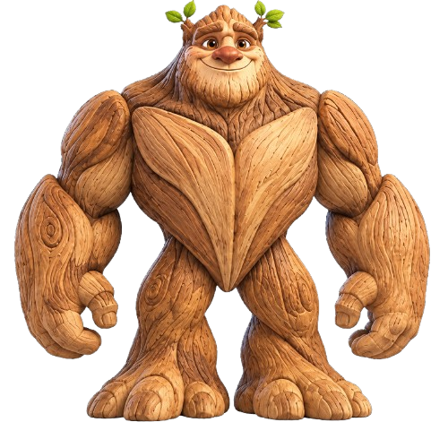
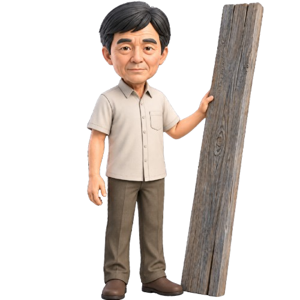

THE STORY
"그의 손끝에서 쓸모없는 나무는 없었다."
장인의 지게에 실려 같은 날 산을 내려왔지만, 곧바로 화려한 북이 된 친구와 달리 마당 처마 밑에서 모진 비바람을 맞아야 했던 오동나무 ‘동이’. 자신이 볼품없어 버려졌다 자책하던 동이가 비움을 거쳐 마침내 세상에서 가장 맑은 소리를 품은 가야금으로 피어나는 감동의 3D 힐링 애니메이션입니다.

동이 (작은 나무)
머리 위에 작은 잎을 틔운 여린 오동나무. "나는 언제쯤 소리를 낼 수 있을까.." 고민하지만, 비바람을 견디며 자신을 비워내 맑고 깊은 가야금의 선율로 피어납니다.

달박 (큰 나무)
크고 단단한 체구의 든든한 박달나무. 장인의 손길을 거쳐 가장 먼저 세상의 심장을 깨우는 웅장한 북이 되며, 훗날 동이의 가야금 소리를 묵묵히 받쳐줍니다.

악기장 (고흥곤 모티프)
나무마다 쓰임의 '때'가 다름을 알기에, 동이가 비워낼 때까지 묵묵히 기다려주고 마침내 그 안의 소리를 깨워주는 참된 장인 (*"어디 보자... 좋은 소리가 되겠어"*).
엇갈린 시작
소리가 닿지 않고 색을 잃은 세상. 같은 산을 내려왔지만 달박은 북이 되고 동이는 차가운 문밖 처마 밑에 남겨집니다.
비바람의 계절
모진 비바람과 눈보라를 견디는 시간. 나무는 수분과 떫은 진액을 스스로 비워내며 가장 가볍고 단단한 울림통으로 성숙합니다.
장인의 발견
비움을 마친 가을, 때를 알고 찾아온 장인의 손길과 인두질을 거쳐 명주실 12현을 얹으며 은은한 황금빛 색채가 피어납니다.
새로운 세상
전통 가야금 선율과 K-POP 아이돌 퍼포먼스의 환상적인 크로스오버 합주! 흑백이던 세상이 완전한 풀컬러로 찬란하게 개화합니다.
영원한 전승
100년의 세월을 건너 다음 세대의 연주자들에 의해 변함없이 이어지는 전통 악기의 영원한 숨결.